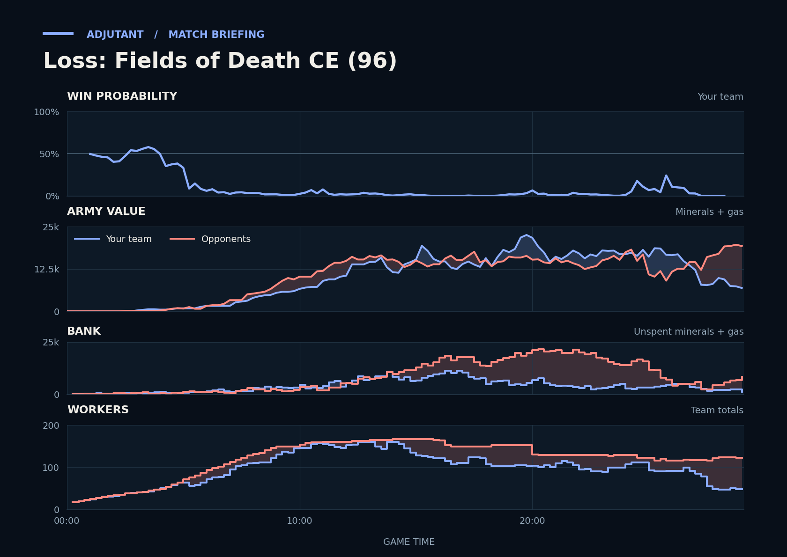

Cached narration uses different analysis inputs (facts, engine notes, prompts or model settings). It has not been regenerated for this report.
Loss. You went in ahead at 26:11 but lost far more army than they did, and that fight decided the game.
Why
14:03–16:00: Ender's air killed Drones at the undefended fifth; TakeTheTip's income fell to about 2,300.
26:11–28:03: Pichu's Cyclones and Ender's air killed Corruptors and Drones, leaving TakeTheTip with 16 workers.
26:11–28:03 (unseen): Pichu built about 6,300 army during that fight, and their side left with far more.
Try next game
TakeTheTip: You had no Spore Crawlers at the fifth when Ender's air hit at 14:03, so morph 2 Spore Crawlers there as soon as Drones start mining at a new base. Check: 2 Spore Crawlers finished at the fifth by 14:00.
Scallop: When free supply drops under 8, start 3 Supply Depots at once. Check: never supply-blocked 6:00–10:00.

Written by claude-sonnet-5-5 from a different set of analysis inputs.
Current engine analysis: turning points, whole game, habits
Debrief
Loss. Review 4:37–5:25: TakeTheTip lost 23 Drones to Hellions. The biggest fight came at 26:06–27:47 (16,800 lost, 7,450 killed).
Team MMR 3715 vs 3753 against Pichu (Terran), Ender (Protoss). Starting win chance 50%.
Try next game
TakeTheTip: by 4:07 keep a few units or a defensive structure at the mineral line and pull workers the moment the attack lands; check: fewer than 5 workers lost.
TakeTheTip: around 26:04, when their army heads to your bases, send the team's army back early or pull workers; check: fewer than 5 workers lost.
You took this fight with 7,375 of army against 19,675; wait until your combined army matches theirs, or fight next to your own defenses. Most of your army died to Void Rays. Scallop: Marines and Vikings beat Void Rays.
Turning points
4:37–5:25: TakeTheTip lost 23 Drones to Hellions. Win chance 37% to 8%.
TakeTheTip lost 23 Drones between 4:37 and 5:24, to Hellions (15 kills), Oracles (5), Adepts (2).
Fighting: you lost 0 of army and killed 625 of theirs. Going in, your armies were worth 675 against their 925.
Their losses: 4 Hellions, 1 Adept, 1 Reaper.
Pattern in your past games: from 4:00 on, losing 4 or more workers within a minute has gone with losing more often, even from similar positions. It is a pattern, not proof that this raid decided the game.
What moved the model’s estimate: economy -16%, tech -9%, army +2%
Selected game-state changes (built from the model’s inputs, start → end):
Upgrade count ratio: 3.00× → 1.00× (smoothed ratio; the model reads its log). How many times more upgrades of any kind we have finished, on a log scale.
Worker trade: 1.33× → 0.15× (smoothed ratio; the model reads its log). Enemy workers we have killed against our workers lost, on a log scale.
Tech ratio: 1.00× → 2.33× (smoothed ratio; the model reads its log). How many times more tech structures we have than they do, on a log scale.
Try: TakeTheTip: by 4:07 keep a few units or a defensive structure at the mineral line and pull workers the moment the attack lands; check: fewer than 5 workers lost.
26:06–27:47: TakeTheTip lost 35 Drones to Cyclones, Tempests and Hellions; 2 of your town halls were destroyed. Win chance 11% to 0%.
TakeTheTip lost 35 Drones between 26:34 and 27:46, to Cyclones (17 kills), Tempests (11), Hellions (5).
Scallop lost 16 SCVs, to Siege Tanks (9 kills), Cyclones (5), Hellions (1).
Fighting: you lost 13,225 of army in the middle of the map and killed 7,100 of theirs. Going in, your armies were worth 16,575 against their 12,300.
Your losses: 22 Corruptors, 8 Thors, 46 Zerglings, 4 Siege Tanks; killed mostly by Cyclones (28 kills), Hellions (14).
Pattern in your past games: after 12:00, losing a base has gone with losing more often, even from similar positions. It is a pattern, not proof that it decided the game.
Replay facts: worker raid (46 workers in under a minute), 2 town halls lost.
Selected game-state changes (built from the model’s inputs, start → end):
Income ratio: 0.79× → 0.15× (smoothed ratio; the model reads its log). How many times more income we collect than they do, on a log scale.
Army spend edge: +4,575 → −10,365. Minerals plus gas in our current army minus theirs, by the game's own army tally.
Army in production lead: −4,650 → −280. Value of army units we have in production minus theirs.
Try: TakeTheTip: around 26:04, when their army heads to your bases, send the team's army back early or pull workers; check: fewer than 5 workers lost.
28:55–29:04: you lost a fight in the middle of the map (2,100 lost, 475 killed). Win chance 0% before it; the game ended right after.
Fighting: you lost 2,075 of army in the middle of the map and killed 400 of theirs. Going in, your armies were worth 7,375 against their 19,675.
Your losses: 3 Thors, 1 Siege Tank, 1 Corruptor, 2 Zerglings; killed mostly by Carriers (3 kills), Void Rays (3).
Their losses: 1 Void Ray.
Try: You took this fight with 7,375 of army against 19,675; wait until your combined army matches theirs, or fight next to your own defenses. Most of your army died to Void Rays. Scallop: Marines and Vikings beat Void Rays.
Across the whole game
Enemy Tempests (they made 33) destroyed 24,700 of your value (49 SCVs, 34 Drones, 25 Corruptors). Counters built after they first struck at 13:01: Scallop made 26 Thors; TakeTheTip made 64 Corruptors, 24 Hydralisks.
Enemy Carriers (they made 18) destroyed 13,800 of your value (16 Corruptors, 12 Hydralisks, 11 SCVs). Counters built after they first struck at 13:45: Scallop made 23 Thors; TakeTheTip made 64 Corruptors, 24 Hydralisks.
Enemy Void Rays (they made 50) destroyed 12,775 of your value (26 SCVs, 18 Drones, 11 Corruptors). Counters built after they first struck at 5:59: Scallop made 38 Missile Turrets, 32 Thors; TakeTheTip made 64 Corruptors, 37 Hydralisks, 13 Spore Crawlers.
Scallop had 8,476 unspent at 16:45.
Scallop lost 32 Thors (16,000) over the game, mostly to Cyclones (10), Carriers (6).
Compared with your other games
Scallop had been supply blocked for 93s by 8:00; in your wins usually 36s. Across your earlier games, when it was like this you won 25% (16 games) vs 48% otherwise (196 games).
Scallop was banking 873 at 6:00; in your wins usually 416. Across your earlier games, when it was like this you won 32% (31 games) vs 49% otherwise (202 games).
Engine debrief-v3-0.9. Losses count only units killed by an enemy. Win chance comes from a model trained on your earlier games.
Earlier replay bookmarks
Earlier moments to revisit, considering both teammates. Each row groups nearby losses. Engine and chart windows may include other simultaneous losses. Values are minerals + gas. These bookmarks do not grade the decisions.
Local losses: TakeTheTip lost 16 Drones (800); opponents lost 4 Hellions, 1 Reaper (500)
Other recorded losses in this window: TakeTheTip lost 2 Drones (100)
Local losses: Duo lost 0; opponents lost 3 Void Rays (1,200)
Local losses: Scallop lost 14 SCVs, 1 Orbital Command, +4 others (1,725); TakeTheTip lost 1 Overlord (100); duo total 1,825; opponents lost 0
Replay map
◎ Historical player start · ◇ Resource cluster · ■ Completed grounded hall · □ Unfinished hall · ✕ Recorded hall ending Dashed rings show recorded events during the selected interval, not simultaneous live state. Symbols and player labels accompany colors.
Hall state
Unplaced halls
Recorded events and source evidenceExact map, registration and resource-site sources
Positive resource-site occupancy is recorded hall presence. Mining, vision, routes, local army availability and map control are unknown. The MMR-conditioned model estimate is unchanged. This panel cannot establish what caused a probability drop.
Older V2 evidence cards
Evidence-first cards are generated independently from the predictive model. Each card separates replay evidence, interpretation, past-only comparison, and an adjustment to test.
Action
TakeTheTip sustained an unspent bank while army investment stayed low
Interpretation
Across 5 sampled checkpoints, TakeTheTip retained a sizeable unspent bank while income stayed above the positive threshold, supply headroom stayed above the threshold, observed live production-structure count was positive, and loss-adjusted current plus in-progress army investment growth stayed low. The live-structure count may include addons, flying structures, or morphing structures; it is infrastructure evidence and does not establish queue occupancy or current training capacity. Cumulative army-loss fields are included so replacement investment is not mislabeled as no conversion. The replay shows an opportunity to test spending timing; it does not show why the bank was held.
Adjustment to test
At a comparable checkpoint next game, set a spending trigger: convert part of the bank into army or in-progress army investment while keeping a small supply buffer, then review the next checkpoint for lower bank and higher investment.
replay_fact TakeTheTip's cumulative combat-army loss value was 25 at 510s and 225 at 570s (delta +200). at 9:30
replay_fact TakeTheTip's current plus in-progress army investment was 2400 at 510s and 2200 at 570s (delta -200). at 9:30
replay_fact TakeTheTip's income was 3011 at 510s and 2653 at 570s (delta -358). at 9:30
replay_fact TakeTheTip's loss-adjusted current plus in-progress army investment growth was +0 (raw investment delta -200 plus cumulative army-loss delta +200; adjusted swing 0). at 9:30
replay_fact TakeTheTip's observed live production-structure count was 3 at 510s and 2 at 570s (delta -1). at 9:30
replay_fact TakeTheTip's supply headroom was 22 at 510s and 8 at 570s (delta -15). at 9:30
replay_fact TakeTheTip's unspent resources was 1766 at 510s and 2051 at 570s (delta +285). at 9:30
Past-only comparison
14 comparable prior wins; median loss-adjusted current plus in-progress army investment change +1462 at matched clock endpoints. Support: 14. Comparable replay IDs: Multiplayer/Fields of Death CE, Multiplayer/Fields of Death CE (3), Multiplayer/Fields of Death CE (4), Multiplayer/Fields of Death CE (6), Multiplayer/Fields of Death CE (8), Multiplayer/Fields of Death CE (11), Multiplayer/Fields of Death CE (13), Multiplayer/Fields of Death CE (22), Multiplayer/Fields of Death CE (23), Multiplayer/Fields of Death CE (37), Multiplayer/Fields of Death CE (47), Multiplayer/Fields of Death CE (49), Multiplayer/Fields of Death CE (52), Multiplayer/Fields of Death CE (54).
Provenance
Baseline replay IDs: Multiplayer/Fields of Death CE, Multiplayer/Fields of Death CE (3), Multiplayer/Fields of Death CE (4), Multiplayer/Fields of Death CE (6), Multiplayer/Fields of Death CE (8), Multiplayer/Fields of Death CE (11), Multiplayer/Fields of Death CE (13), Multiplayer/Fields of Death CE (22), Multiplayer/Fields of Death CE (23), Multiplayer/Fields of Death CE (37), Multiplayer/Fields of Death CE (47), Multiplayer/Fields of Death CE (49), Multiplayer/Fields of Death CE (52), Multiplayer/Fields of Death CE (54)
Retrospective replay-state association; it does not establish causation or what was knowable during play. Cancellations, tech savings, and army position or visibility are not reconstructed from these state totals. Reference windows are one per unique replay/series, strictly earlier than the target, explicit-result wins only, and use endpoints at or before each target endpoint within the configured clock tolerance; this is clock-only context, not a full pre-window state match.
Action
Scallop sustained an unspent bank while army investment stayed low
Interpretation
Across 4 sampled checkpoints, Scallop retained a sizeable unspent bank while income stayed above the positive threshold, supply headroom stayed above the threshold, observed live production-structure count was positive, and loss-adjusted current plus in-progress army investment growth stayed low. The live-structure count may include addons, flying structures, or morphing structures; it is infrastructure evidence and does not establish queue occupancy or current training capacity. Cumulative army-loss fields are included so replacement investment is not mislabeled as no conversion. The replay shows an opportunity to test spending timing; it does not show why the bank was held.
Adjustment to test
At a comparable checkpoint next game, set a spending trigger: convert part of the bank into army or in-progress army investment while keeping a small supply buffer, then review the next checkpoint for lower bank and higher investment.
replay_fact Scallop's cumulative combat-army loss value was 100 at 345s and 100 at 390s (delta +0). at 6:30
replay_fact Scallop's current plus in-progress army investment was 775 at 345s and 775 at 390s (delta +0). at 6:30
replay_fact Scallop's income was 1958 at 345s and 2250 at 390s (delta +292). at 6:30
replay_fact Scallop's loss-adjusted current plus in-progress army investment growth was +0 (raw investment delta +0 plus cumulative army-loss delta +0; adjusted swing 0). at 6:30
replay_fact Scallop's observed live production-structure count was 6 at 345s and 7 at 390s (delta +1). at 6:30
replay_fact Scallop's supply headroom was 14 at 345s and 6 at 390s (delta -8). at 6:30
replay_fact Scallop's unspent resources was 837 at 345s and 1455 at 390s (delta +618). at 6:30
Past-only comparison
16 comparable prior wins; median loss-adjusted current plus in-progress army investment change +450 at matched clock endpoints. Support: 16. Comparable replay IDs: Multiplayer/Fields of Death CE, Multiplayer/Fields of Death CE (2), Multiplayer/Fields of Death CE (3), Multiplayer/Fields of Death CE (4), Multiplayer/Fields of Death CE (6), Multiplayer/Fields of Death CE (8), Multiplayer/Fields of Death CE (11), Multiplayer/Fields of Death CE (13), Multiplayer/Fields of Death CE (22), Multiplayer/Fields of Death CE (23), Multiplayer/Fields of Death CE (37), Multiplayer/Fields of Death CE (47), Multiplayer/Fields of Death CE (49), Multiplayer/Fields of Death CE (52), Multiplayer/Fields of Death CE (54), Multiplayer/Fields of Death CE (55).
Provenance
Baseline replay IDs: Multiplayer/Fields of Death CE, Multiplayer/Fields of Death CE (2), Multiplayer/Fields of Death CE (3), Multiplayer/Fields of Death CE (4), Multiplayer/Fields of Death CE (6), Multiplayer/Fields of Death CE (8), Multiplayer/Fields of Death CE (11), Multiplayer/Fields of Death CE (13), Multiplayer/Fields of Death CE (22), Multiplayer/Fields of Death CE (23), Multiplayer/Fields of Death CE (37), Multiplayer/Fields of Death CE (47), Multiplayer/Fields of Death CE (49), Multiplayer/Fields of Death CE (52), Multiplayer/Fields of Death CE (54), Multiplayer/Fields of Death CE (55)
Retrospective replay-state association; it does not establish causation or what was knowable during play. Cancellations, tech savings, and army position or visibility are not reconstructed from these state totals. Reference windows are one per unique replay/series, strictly earlier than the target, explicit-result wins only, and use endpoints at or before each target endpoint within the configured clock tolerance; this is clock-only context, not a full pre-window state match.
P(win) is an MMR-conditioned model estimate. Economy and Army Position compare the duo to historical positions at similar game times; they are not model-contribution lanes.
Raw State Comparisons
Observed tracker values, not race-normalized scores. Duo and opponent totals are shown alongside TakeTheTip and Scallop so the normalized lanes above can be checked against the underlying army, economy and bank quantities.
Observed Combat Outcomes
Positive bars favor the duo; negative bars favor the opponents. Each bar summarizes the preceding 15 seconds at a sampled boundary; selected-window summaries exclude future events. These observations do not prove the correct alternative decision.
Factual Replay Timeline
These milestones are replay facts synchronized to the selected window. They are context, not claims about what caused the result.